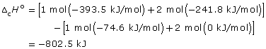
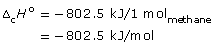
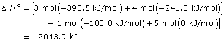
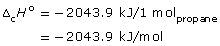
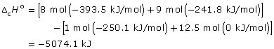
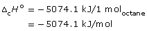

Module 2—Talking Energy
 Explore
Explore
Try This
What makes a good fuel?
TR 1. List as many criteria as you can think of that should be considered in choosing an appropriate fuel for a vehicle. Rank your criteria in order of importance, and then rationalize your ranking.
Check your answers to the TR questions
 Read
Read
How many of the criteria you listed in TR 1 relate to the energy content of fuel? In Module 1 you performed a calorimetry experiment to determine the energy content per gram of a nut. You also performed calculations to determine the molar heat of combustion for some hydrocarbons using standard molar enthalpies of formation.
Calorimetry and standard molar enthalpy of formation are two ways to determine the energy change associated with the combustion of a fuel. How are these two methods similar and how are they different? Which means would be most helpful to you when making a decision about using biodiesel as a vehicle fuel? To answer these questions it might be helpful to know what biodiesel is. In the next investigation you will make biodiesel and then test it to determine its energy content.
In preparation for the investigation, complete the following Self-Check questions to review your ability to perform calculations for molar enthalpy of combustion. You may wish to review Module 1, Lesson 5, SC 1 prior to attempting these questions.
 Self-Check
Self-Check
Use the following data to answer the next question:
|
Fuel |
Heat of Combustion (kJ/g) |
Chemical Formula |
|
methane |
50.01 |
CH4 |
|
propane |
46.36 |
C3H8 |
|
octane |
44.43 |
C8H18 |
SC 1. Rank the fuels from lowest to highest heat of combustion as expressed in kJ/g in the data table.
SC 2. Explain how you could convert a heat of combustion for the hydrocarbons listed in the data table into a molar enthalpy of combustion.
SC 3. Calculate the molar enthalpy of combustion for each of the fuels listed in the data table. Rank the fuels from lowest to highest molar enthalpy of combustion.
SC 4. Compare the rankings you developed in SC 1 and SC 3.
SC 5. Does a trend exist between the molar enthalpies of combustion and the molar masses of the fuels? (You may wish to refer to the work you completed in SC 3 and SC 4.)
SC 6. List one advantage of communicating the energy change associated with combustion of a hydrocarbon using the units kJ/mol and kJ/g.
Self-Check Answers
Contact your teacher if your answers vary significantly from the answers provided here.
SC 1. ranking: octane, propane, methane
- SC 2. To convert from kJ/g to kJ/mol, multiply the heat of combustion by the molar mass of the hydrocarbon. For example
- –50.00 kJ/g × 16.05 g/mol = –802.5 kJ/mol
–46.34 kJ/g × 44.11 g = –2043.9 kJ/mol
–44.408 kJ/g × 114.26 g = –5074.1 kJ/mol
SC 3.
methane: CH4(g) + 2 O2(g) → CO2(g)
+ 2 H2O(g)


propane: C3H8(g) + 5 O2(g) → 3 CO2(g) + 4 H2O(g)


octane: C8H18(g)
+ 12.5 O2(g) → 8 CO2(g) + 9 H2O(g)


ranking: methane, propane, octane
SC 4. For the hydrocarbons being compared, the rankings are reversed between the lists. The hydrocarbon with the highest heat of combustion has the lowest molar heat of combustion.
SC 5.
| Hydrocarbon |
Molar Enthalpy of Combustion (kJ/mol) |
Molar Mass (g/mol) |
|
methane, CH4 |
–802.5 |
16.05 |
|
propane, C3H8 |
–2043.9 |
44.11 |
|
octane, C8H18 |
–5074.1 |
114.26 |
Trend: As the molar mass of a hydrocarbon increases, so does its molar enthalpy of combustion.
SC 6. Fuels are usually not sold or distributed by the mole. Volume or mass of a fuel is measurable. An energy value per unit mass can be easily used in predicting net energy output from a selected mass.
Molar energy changes are convenient because they provide insight into the energy associated with a defined number of fuel particles (one mole). When expressed per unit of mass, the number of reacting particles can be different.